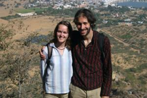

Le 14 décembre 2004,
Voici deux jours que nous sommes a Pushkar, village de pelerinage en raison de son lac sacre. C’est aussi un lieu tres touristique, surement une consequence de sa haute frequentation, au depart, par des hippies en pleine crise mystique. Aujourd’hui, les touristes etrangers sont la plutot pour la fete (des israliens en grande majorite). Etant donne que la consommation d’alcool (et de viande aussi) est interdite pour des raisons religieuses, il se rattrapent sur tous les derives du hashish : il est fume, mange (space cakes) et bu (bhang lassis).
 Les brahmanes, caste dominante des pretres, ont eux aussi su tirer parti du tourisme. Ils vous "offrent" une fleur sacree a jeter dans le lac sacre et recitent des prieres sacrees pour chaque membre de votre famille. Mais c’est surtout le dieu Argent qu’ils venerent car ils vous demandent 50 roupies par parent. De sacres rigolos... Avertis par deux israeliennes avec qui nous avons fait la route dans le bus, nous ne tombons pas dans le panneau. A chaque refus de notre part, les brahmanes nous retorquent que nous ne respectons pas leur tradition. En lachant un equivalent anglais de "tout ce que tu respectes, c’est le business", ils nous laissent tranquilles.
Mis a part ces pseudos mystiques, Pushkar est un endroit plutot reposant compare aux grosses villes comme Jaipur ou Jodhpur. Notre hotel est tenu par une famille tres sympathique et accueillante mais qui sait respecter notre intimite (contrairement a notre hotel de Jodhpur). Un des fils, qui a 25 ans, a tente une emigration vers les Etats-Unis. Il est revenu au bout de 6 mois pour plusieurs raisons. Il a travaille chez Mac Donald’s avec les odeurs de boeuf grille toute la journee. Il faut savoir que la vache est un animal sacre en Inde et specialement a Pushkar, la consommation de viande et d’oeufs est interdite.
De plus, il a trouve les gens trop indifferents voire egoistes et beaucoup plus stresses par l’argent que dans son pays. La notion du temps non plus n’est pas la meme. Il donne l’exemple d’un americain qui menacait d’appeler la police parce qu’il avait gare sa voiture plus de deux minutes devant chez lui. En parlant de voitures, il a ete choque qu’on ne puisse rien faire en Amerique sans en posseder une, que le reseau de train est largement moins developpe qu’en Inde. Meme pour se deplacer en ville, ca lui posait probleme. Il est vrai qu’en Inde on trouve dans la moindre bourgade des bus locaux, des taxis, des velos-rickshaws et des autos-rickshaws et chacun peut trouver un tarif adapte a son porte-monnaie. Les transports en commun sont lents mais ont le merite d’etre omnipresents. Dans le New Jersey, il a trouve hallucinant les embouteillages ou les voitures sont immobilisees les unes contre les autres a perte de vue. Cela lui fait l’effet d’une usine de voitures qui stockait ses vehicules sur des kilometres.
Le plus drole est qu’il a change en l’espace de 6 mois. Il a trouve en rentrant que l’Inde etait sale alors qu’il ne s’etait jamais fait la remarque avant de partir. Il a trouve aussi que tout etait plus lent. Pour exemple, il nous explique qu’il a mis plus de 60 heures pour faire Los Angeles - Bombay avec un transit en Europe, puis Bombay - Aurangabad. De la, il a voulu prendre un train pour Ajmer (tout pres de Pushkar). Il a fait la queue pendant une heure pour finir par s’apercevoir qu’il n’avait pas change assez de dollars en roupies. Il a fait la queue pendant une heure a la banque pour faire le change, puis refait la queue une heure a la gare pour qu’on lui dise que le train etait complet. Il avait tout ce chemin en quelques dizaines d’heures pour etre bloque a quelques dizaines de kilometres de chez lui. En Amerique, il y a des distributeurs automatiques partout. Dans le moindre endroit, on ne fait pas la queue plus de deux minutes. Il a voulu rentrer car sa famille lui manquait. Meme s’il a moins de chance de gagner beaucoup d’argent, il est chez les siens. De maniere generale, les Indiens lui paraissent plus heureux. La civilisation de l’individu contre celle du groupe...
Le soir, avant de quitter l’hotel, j’ai une conversation avec la mere. Nous parlons de mariage. Elle m’explique pourquoi il est important que les familles choisissent la future epouse pour leurs fils. Selon elle, a l’age du mariage, les jeunes ne savent pas encore ce qu’ils veulent et ne connaissent pas les contraintes de la vie (les jeunes filles sont traditionnellement mariees bien avant 20 ans). De plus, la famille est tres importante en Inde car la jeune mariee vient habiter avec son mari dans la maison des parents de ce dernier. Il est donc crucial que la famille du futur marie choisisse la future belle-fille qui lui plaise. Depuis quelques dizaines d’annees, les futurs conjoints ont le droit de se voir pour donner un droit de veto durant un entretien d’une heure environ. La mere de famille qui tient l’hotel a bientot 50 ans. Elle a ete mariee a 16 ans et a vu son epoux pour la premiere fois le jour de ses noces. De nos jours, environ un tiers des Indiens choisissent eux-memes leur conjoint (le pourcentage varie selon les etats). Selon elle, ce sont ces couples qui se disputent le plus et peuvent se separer.
Michaël
Pas de recette ce coup-ci ? Dommage...
Sinon, ça va, j’ai encore de la marge côté poil. Par contre, tu risques de regretter .... surtout pour ton bronzage quand tu vas te raser !
{kind=link}
{kind=link}